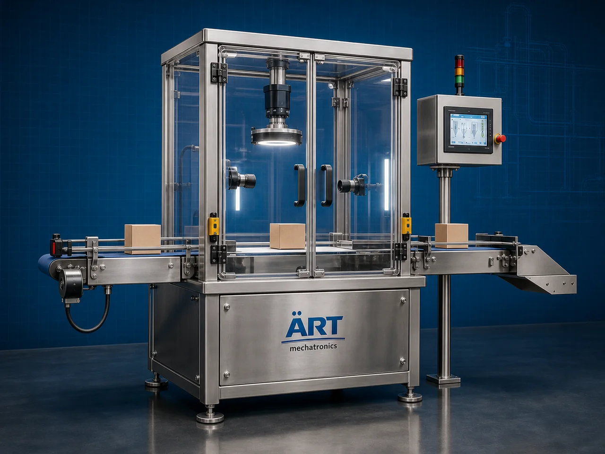

Vision Inspection Machine (Industrial Vision Inspection System)
A Vision Inspection Machine, also known as an Industrial Vision Inspection System, Camera Inspection Machine, Automated Optical Inspection System, or Packaging Quality Inspection Machine, is an advanced industrial quality control solution designed for automatic product inspection, label verification, barcode inspection, print verification, defect detection, packaging inspection, dimensional verification, and high-speed production line quality control operations across food, pharmaceutical, cosmetic, chemical, and FMCG industries.

About the Vision Inspection
Vision inspection systems are widely used for:
- Label inspection
- Barcode and QR code verification
- Batch code inspection
- Product defect detection
- Packaging quality inspection
- Fill level verification
- Cap and seal inspection
- Dimensional and orientation inspection
The machine improves:
- Product quality assurance
- Packaging accuracy
- Brand protection
- Production efficiency
- Traceability compliance
- Customer satisfaction
- Export quality standards
Industrial vision inspection machines use:
- High-resolution industrial cameras
- AI-based image processing systems
- PLC and HMI automation controls
- Conveyor synchronized inspection systems
- Automatic rejection mechanisms
to automatically inspect products and packaging with superior accuracy and high production efficiency.
Vision inspection systems are widely used in industries such as:
Food processing industries Pharmaceutical industries Chemical industries Cosmetic industries Electronics industries Automobile industries Packaging industries FMCG industries
where defect-free production, packaging compliance, and intelligent quality control are essential.
The machine is highly suitable for:
- Packaging quality inspection
- Barcode and label verification
- Product defect inspection
- Seal and cap inspection
- Batch code verification
- Industrial automation quality control systems
ART Mechatronics offers high-performance vision inspection machines, engineered for continuous industrial operation, precision optical inspection, reliable defect detection, and long-term industrial quality assurance.
Working Principle of Vision Inspection Machine
- 1. Product Feeding & Conveyor Handling Products are automatically transferred through synchronized conveyor systems for inspection operation.
- 2. Image Capture & Processing Process Machine automatically captures high-resolution images using industrial cameras and processes inspection data using intelligent image processing software.
AI-based inspection systems ensure accurate defect detection and smooth product handling.
- 3. Product Inspection Operation Machine handles inspection of: ✔ Bottles ✔ Pouches ✔ Sachets ✔ Cartons ✔ Labels ✔ Cans ✔ Containers ✔ Industrial packaged products
accurately and continuously.
- 4. Quality Inspection & Verification Process Machine performs: Label inspection Barcode verification QR code inspection Batch code verification Seal inspection Cap inspection Fill level inspection Defect detection
for efficient and compliant industrial quality assurance.
- 5. Automatic Rejection & Automation Integration Optional systems include: Automatic reject systems Database connectivity ERP integration Data logging systems Robotic handling integration
- 6. Finished Product Discharge Approved products discharged automatically for: Packaging operations Warehouse storage Retail distribution Export shipment handling
Types of Vision Inspection Machines
- 1. Label Inspection Machine Designed for: ✔ Label verification and packaging inspection applications
- 2. Barcode & QR Code Inspection System Suitable for: ✔ Product traceability and packaging compliance systems
- 3. Bottle & Container Vision Inspection Machine Uses: ✔ Beverage and liquid packaging inspection systems
- 4. AI-Based Defect Detection Machine Designed for: ✔ Intelligent industrial quality control operations
- 5. High-Speed Vision Inspection System Suitable for: ✔ Ultra-fast industrial inspection applications
- 6. Fully Automatic Optical Inspection System Designed for: ✔ Complete industrial quality control automation lines
Industries Using Vision Inspection Machines
🍅 Food Processing Industry Snacks, spices, sauces, and food packaging inspection systems. 🥤 Beverage Industry Bottle inspection, cap inspection, and beverage packaging verification systems. 💊 Pharmaceutical Industry Medicine packaging, serialization, and healthcare product inspection systems. ⚗️ Chemical Industry Industrial containers, chemical packaging, and product quality inspection systems. 🧴 Cosmetic & Personal Care Industry Perfume packaging, cosmetic containers, and retail packaging inspection systems. 🛒 FMCG Industry Consumer products and retail packaging quality inspection systems.
Features & Advantages
- High-speed automatic vision inspection operation
- Accurate AI-based defect detection systems
- Reliable barcode, label, and code verification systems
- PLC and intelligent automation control systems
- Improves product quality and packaging consistency
- Reduces manual inspection dependency
- Supports multiple product formats and packaging types
- Reliable long-term industrial performance
- Smooth integration with packaging automation lines
Technical Highlights
Machine Type: Vision inspection machine Industrial optical inspection system Packaging quality inspection machine Product Compatibility: Bottles Pouches Sachets Cartons Labels Containers Industrial packaged products Inspection Integration: Industrial camera systems AI image processing systems Barcode verification systems Automatic reject systems Features: PLC control system Touchscreen HMI High-resolution imaging Data logging systems ERP integration Applications: Packaging inspection Label verification Barcode inspection Defect detection Industrial product quality control Automation: Semi-automatic Fully automatic industrial systems
Turnkey Vision Inspection Solutions
ART Mechatronics offers: Complete vision inspection systems Automatic optical inspection solutions Packaging quality control integration systems Conveyor synchronization systems Installation & commissioning After-sales service & AMC
Why Choose Art Mechatronics
Expertise in industrial inspection and automation systems Customized vision inspection solutions for multiple industries High-performance and intelligent inspection technology Advanced PLC, AI, and optical inspection systems Proven industrial quality assurance performance across sectors
Applications
Food Processing Plants Pharmaceutical Manufacturing Facilities Beverage Packaging Industries Chemical Processing Units Cosmetic Manufacturing Plants FMCG Packaging Industries
Related Automation & Robotics machines
Get pricing & specs for the Vision Inspection
Share the product, target capacity, current process and plant location. These details help our engineers discuss the right machine or line configuration.
One partner, from design to start-up
ART Mechatronics designs, manufactures, installs and commissions your Vision Inspection solution with regional presence in India, UAE and Thailand.